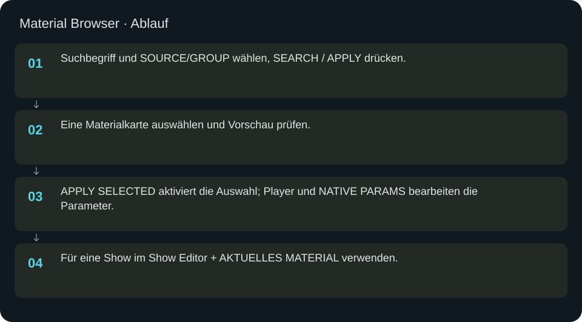
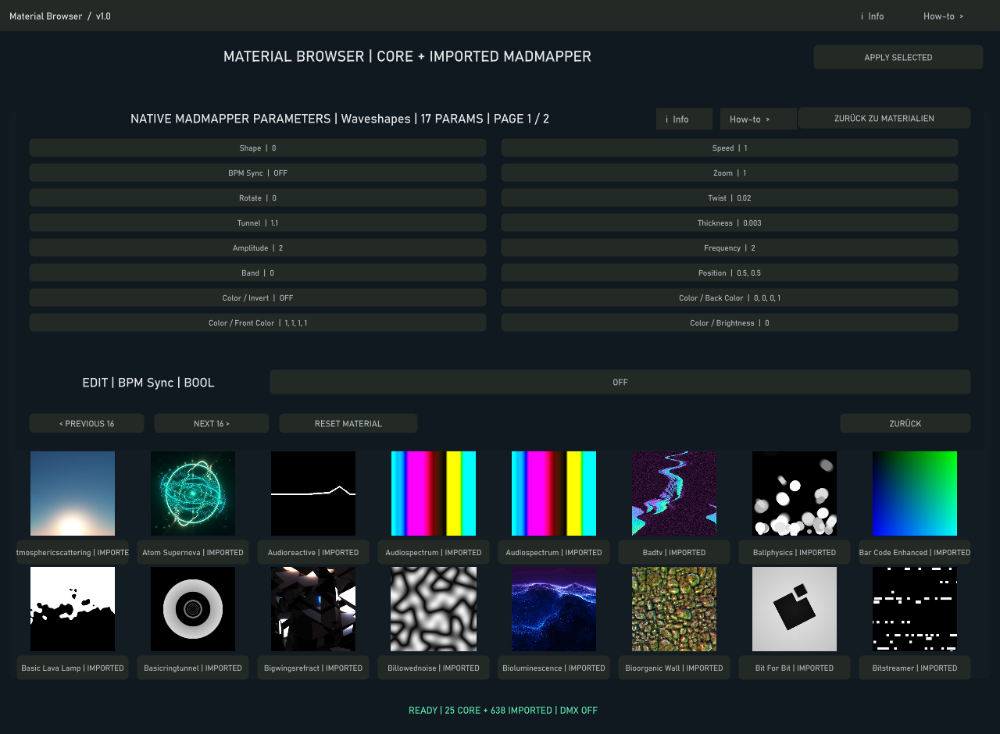

Material Browser
Core-Effekte und importierte Materialien suchen, vorprüfen und aktivieren.
In welcher Reihenfolge?
- Suchbegriff und SOURCE/GROUP wählen, SEARCH / APPLY drücken.
- Eine Materialkarte auswählen und Vorschau prüfen.
- APPLY SELECTED aktiviert die Auswahl; Player und NATIVE PARAMS bearbeiten die Parameter.
- Für eine Show im Show Editor + AKTUELLES MATERIAL verwenden.


Schritt für Schritt
Material oder Show?
Der Quellschalter im Player entscheidet, was im LED-Pfad anliegt. Eine Show kann im Hintergrund laufen, obwohl Material als Quelle gewählt ist. Im Show-Modus ist eine Materialvorschau nicht automatisch die aktive LED-Quelle.
Beispiel
Plasma suchen, eine verfügbare Karte auswählen und APPLY SELECTED drücken. Vorschau und Status kontrollieren, MASTER SPEED auf 1 und Fokus auf 0.5 setzen. Anschließend eine Cue im Show Editor anlegen. Fehlende oder nicht unterstützte Imports erst in der Bibliothek klären.
Eingaben & Beispiele
| Feld | Bedeutung | Beispiel |
|---|---|---|
unified_search | Name oder Teil eines Materialnamens. Leeren zeigt wieder alle Ergebnisse. | Plasma |
mb_control_zoom | Ausschnitt des Materials; größer zoomt in das Bild. | 1.0 |
mb_control_speed | Animationsgeschwindigkeit. | 1.0 |
mb_control_focusx | Horizontaler Bildfokus. | 0.5 |
mb_control_focusy | Vertikaler Bildfokus. | 0.5 |
mb_control_gradient_strength | Anteil des ausgewählten Farbverlaufs. | 0.5 |
Numerische Eingaben verwenden einen Punkt als Dezimaltrennzeichen. IPs, Pfade, Quellstarts und Universen zuerst mit der tatsächlichen Installation vergleichen.
Woran erkenne ich Erfolg?
Die erwartete Ansicht öffnet, Status und Vorschau entsprechen der gewählten Aktion, und es erscheint kein Fehler. Änderungen beim nächsten Laden beziehungsweise im Live-Status erneut lesen. Ein erfolgreicher Bildschirmtest beweist weder physische LED-Ausgabe noch korrekte Kameramessung.
Quellennachweis
Dateipfade im Projekt-Repository; die Onlinehilfe gibt keinen allgemeinen Dateisystemzugriff frei.
pixelblaze_mapper/build_unified_material_browser.py
Dialog: /project1/material_browser